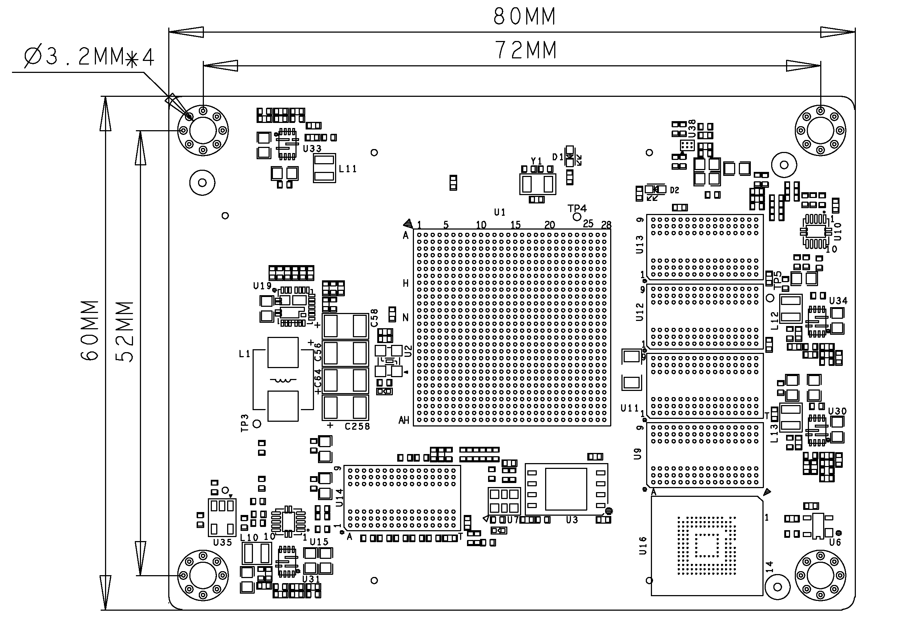
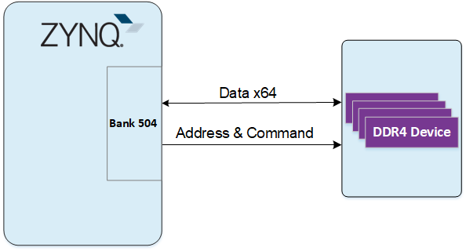
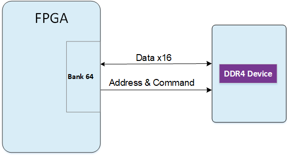

XME0803(4EV) Reference Manual
Development Environment:
Vivado 2022.2 is from Xilinx website
WeChat Public Number:

●1. Overview
XME0803(4EV) is a industrial-grade system module based on Xilinx Zynq UltraScale+ SoC from Microphase Technology. With customizable variants available upon request, customised requirements may be subject to minimum order quantities, please contact our sales team for more information: sales@microphase.cn.
The board’s PS side is equipped with 4 DDR4 SDRAM chips, while the PL side integrates 1 DDR4 SDRAM chip. The data read/write clock frequency between the ZYNQ and DDR4 reaches up to 1200 MHz (data rate: 2400 Mbps), and the data read/write clock frequency between the FPGA and DDR4 reaches up to 1066 MHz (data rate: 2132 Mbps). Additionally, the core board integrates a 256-Mbit QSPI flash, 8GByte eMMC flash, and power management.
The core board features 168 single-ended IOs (configurable as 84 differential pairs), adjustable IO voltages, 4 PS-GTR high-speed RX/TX pairs, 16 GTH high-speed RX/TX pairs, and equal-length differential alignments with 50-ohm single-ended and 100-ohm differential impedance.
○Board Layout

○Key Features
Xilinx Zynq™ XCZU4EV-SFVC784 Soc
DDR4: PS 2GB DDR4 RAM, 64Bit;
PL 512MB DDR4 RAM, 16BitFlash: 256Mbit QSPI Flash, 8GB eMMC Flash.
LED: 1 Power LED, 1 FPGA Done LED
GTR: 4
GTH:16
MIO: 58 MIOs, 1.8V
PL GPIO: 168, Adjustable Voltage, 72 for HD BANK, 96 for HR BANK,
Can be configured as 84 differential pairsConnectors: 3 x 120pin High Speed B2B Connectors
○Mechanical Spec

●2. Function Resources
○FPGA
PS:
Up to 1.5GHz quad-core Cortex-A53 MPCore;
Up to 600MHz dual-core Cortex-R5 MPCore
x32/x64: DDR4, LPDDR4, DDR3, DDR3L, LPDDR3 with ECC
2x AXI 32b Master, 2x AXI 32b Slave 4x AXI 64b/32b Memory AXI 64b ACP 16 Interrupts
High-Speed Connectivity: PCIe® Gen2 x4, 2x USB3.0, SATA 3.1, DisplayPort, 4x Tri-mode Gigabit Ethernet
General Connectivity: 2xUSB 2.0, 2x SD/SDIO, 2x UART, 2x CAN 2.0B, 2x I2C, 2x SPI, 4x 32b GPIO
Programmable from JTAG, Quad-SPI flash, microSD card, and eMMC.
PL:
LUTs: 88K
DSP Slices: 728
Logic Cells: 192K
Flip-Flops: 176K
Total Block RAM: 4.5Mb
UltraRAM:14Mb
MAX. Distributed RAM: 2.6Mb
Clock Management Tiles(CMTs): 4
Video Codec Unit(VCU): 1
PCI Express Gen 3x16/Gen4x8: 2
AMS-System Monitor: 1
GTH 16.3Gb/s Transceivers: 16
○DDR4
The PS-side module uses four 16-bit DDR4 memory chips, totaling 512MB, with a data width of 64 bits. The DDR4 model is MT40A512M16LY-062E. The maximum operating clock speed of the DDR4 SDRAM is 1200MHz (data rate up to 2400Mbps). The DDR4 chips on the PS side are connected to the PS BANK 504 memory interface.

The PL-side module uses a single 16-bit DDR4 memory chip, totaling 512MB. The DDR4 model is MT40A512M16LY-062E. The maximum operating clock speed of the DDR4 SDRAM is 1066MHz (data rate up to 2132Mbps). The DDR4 chip on the PL side is connected to the PL BANK 64 memory interface.

○eMMC
The module features an 8GB eMMC interface (PS_SDIO1) that can be utilised for system files or other data file storage. It can also be employed as a secondary boot device in conjunction with the QSPI flash for system boot. The interface is PS BANK501 MIO[46-51].
| Signal Name | Pin Number / Pin Name |
|---|---|
| MMC_DATA0 | AH18 / PS_MIO13_500 |
| MMC_DATA1 | AG18 / PS_MIO14_500 |
| MMC_DATA2 | AE18 / PS_MIO15_500 |
| MMC_DATA3 | AF18 / PS_MIO16_500 |
| MMC_DATA4 | AC18 / PS_MIO17_500 |
| MMC_DATA5 | AC19 / PS_MIO18_500 |
| MMC_DATA6 | AE19 / PS_MIO19_500 |
| MMC_DATA7 | AD19 / PS_MIO20_500 |
| MMC_CMD | AC21 / PS_MIO21_500 |
| MMC_CLK | AB20 / PS_MIO22_500 |
| MMC_NRST | AB18 / PS_MIO23_500 |
○JTAG
The JTAG signal link of the XME0803(4EV) is connected to the expansion connector.
| Signal | JM3 Pin Number | Explain |
|---|---|---|
| FPGA_TCK | Pin13 | Input (3.3V) |
| FPGA_TDI | Pin15 | Input (3.3V) |
| FPGA_TDO | Pin17 | Output (3.3V) |
| FPGA_TMS | Pin19 | Output (3.3V) |
○Boot Config
The XME0803 supports four boot modes: JTAG boot, QSPI boot, SD card boot, and eMMC boot. Upon power-up, the system determines the boot mode based on the pin level states. Users can select the desired boot mode by adjusting the DIP switch settings on the carrier board.
| Mode | PS_MODE3 (JM3 PIN20) |
PS_MODE2 (JM3 PIN18) |
PS_MODE1 (JM3 PIN16) |
PS_MODE0 (JM1 PIN14) |
|---|---|---|---|---|
| JTAG | 0 | 0 | 0 | 0 |
| QSPI | 0 | 0 | 0 | 1 |
| SD | 0 | 1 | 0 | 1 |
| eMMC | 0 | 1 | 1 | 0 |
○Quad-SPI Flash
One-board 256M Quad-SPI Flash memory MT25QU256ABA1EW9-0SIT is used to store initial FPGA configuration and user’s application as well as data.
| Position | Model | Capacity | Factory |
|---|---|---|---|
| U4 | MT25QU256ABA1EW9-0SIT | 256 Byte | Micron |
○Clock
The XME0803(4EV) core board provides a 33.3Mhz active clock for the PS system, a 200Mhz active clock for the PL system.
| Position | Signal Name | Frequency | Pin Number |
|---|---|---|---|
| U2 | PS_CLK_33d3 | 33.333Mhz | R16 |
| U7 | SYS_CLK_P | 200Mhz | AF7 |
| U7 | SYS_CLK_N | 200Mhz | AF6 |
○Power
Please note that the power input of XME0803(4EV) is +5V. We recommend using a 5V/2A power supply.
○LED
The XME0803(4EV) board provides two LEDs, the power indicator and the FPGA configuration status light.
| LED | ZYNQ Pin | Note |
|---|---|---|
| D4 | -- | Power LED |
| D1 | AA9 | FPGA configuration status LED, lit after successful FPGA configuration |
○Expansion Ports
The XME0803(4EV) uses three sets of connectors, JM1, JM3 and JM4, for the FPGA IO signals and Ethernet interface.
3 x AXK5A2137YG, 120Pin, 0.5mm Pitch
| Core Board Connector Models | Based Board Connector Models | Manufacturers | Mated height |
|---|---|---|---|
| AXK5A2137YG | AXK6A2337YG | Panasonic | 3mm |
FPGA Bank, Number of IOs vs. B2B Connector Table
| FPGA Bank | B2B Connector | IO Number | Voltage | Explain |
|---|---|---|---|---|
| BANK505 | JM1 | 24 | - | 4 pairs of CLK, 4 pairs of TX and RX |
| BANK502 | JM1 | 26 | 1.8V | 26 single-ended, can be mated to 13 differential pairs |
| BANK501 | JM1 | 26 | 1.8V | 26 single-ended, can be mated to 13 differential pairs |
| BANK45 | JM1 | 24 | 3.3V | 24 single-ended, can be mated to 12 differential pairs |
| BANK44 | JM3 | 24 | Adjustable | 24 single-ended, can be mated to 12 differential pairs |
| BANK43 | JM3 | 24 | Adjustable | 24 single-ended, can be mated to 12 differential pairs |
| BANK224 | JM3 | 20 | - | 2 pairs of CLK, 4 pairs of TX and RX |
| BANK66 | JM4 | 48 | Adjustable | 48 single-ended, can be mated to 24 differential pairs |
| BANK65 | JM4 | 48 | Adjustable | 48 single-ended, can be mated to 24 differential pairs |
Description:
Bank44、43 IO level depends on JM1 Pin61&62 voltage input, input range 1.2V-1.8V.
Bank66 IO level depends on JM4 Pin31&32 voltage input, input range 1.2V-3.3V.
Bank65 IO level depends on JM4 Pin91&92 voltage input, input range 1.2V-3.3V.
MIO8,MIO9,MIO10,MIO11,MIO24 and MIO25 (JM1 Pin20,55,57) level is 1.8V.
JTAG,RESET (JM1 Pin18, Pin23-Pin29)level is 3.3V.
Please refer to the ‘XME0803_Pinout Table’ for detailed pin definitions of the XME0803.